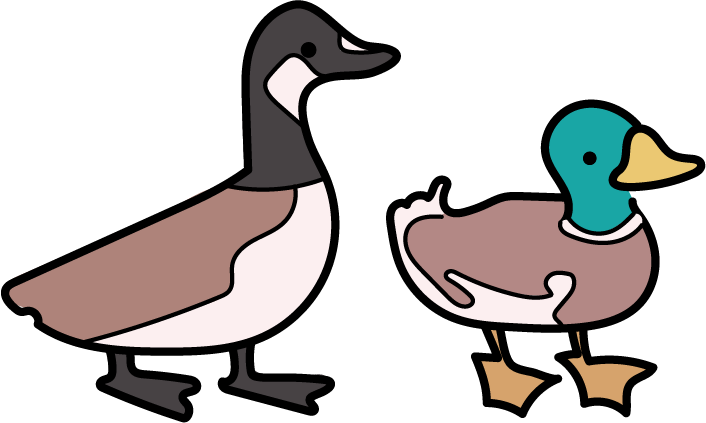
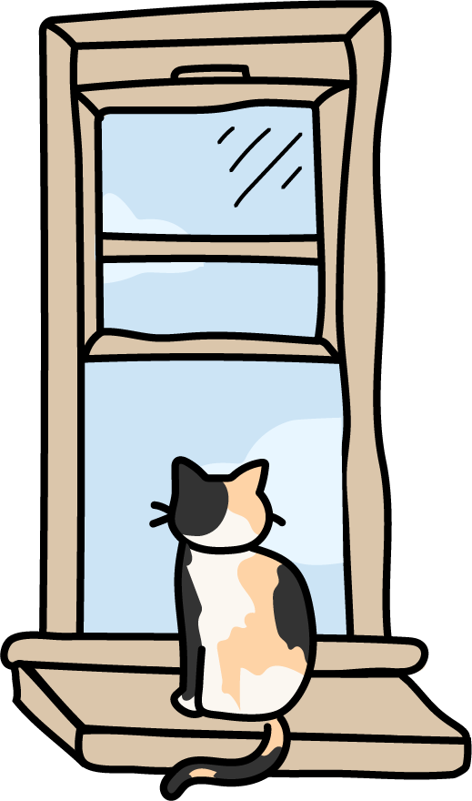
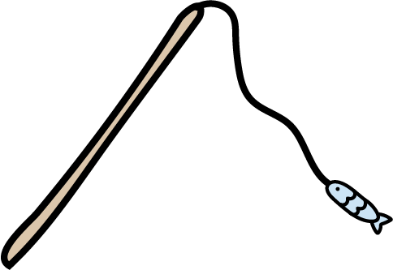

CAT ARCHIVES
Why Cats Love Looking Outside

Bird-watching ("cat TV")
Cats are naturally attracted to movement, which makes the outdoors, birds, squirrels, leaves, shadows, feel like a live-action show just for them. This "cat TV" keeps their minds active and satisfies their instinct to observe potential prey from a safe distance. Even indoor cats experience excitement, curiosity, and enrichment simply by watching the world pass by.

How to set up a safe window perch
A sturdy window perch gives your cat a comfortable place to lounge while they watch outside. Choose a spot with bright light and a secure ledge or suction-cup platform. Make sure screens are tightly fitted so your cat can enjoy the view without risk. Adding a soft blanket or cushion can turn it into their favorite all-day hangout.

Indoor cat enrichment ideas
Windows are great stimulation, but variety keeps indoor cats mentally healthy. Rotate toys, try puzzle feeders, and create vertical spaces like shelves or cat trees. You can also set up a small "bird feeder zone" outside the window to attract wildlife safely. These little enrichments help prevent boredom and give your cat a more engaging, fulfilling environment.